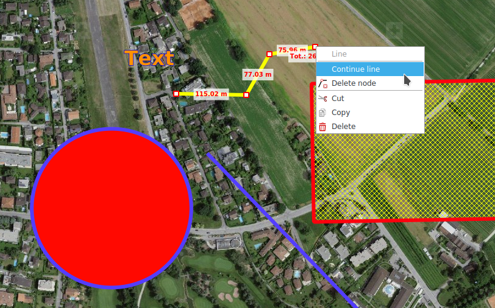
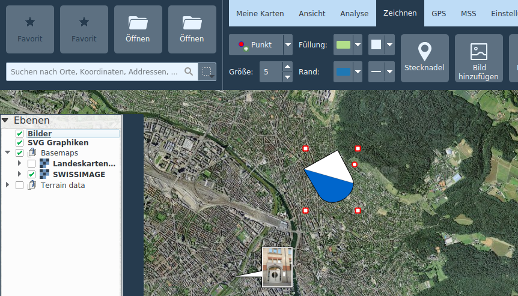

Draw
Geometries and labels (Redlining)
Geometries of the following types can be drawn:
- Points
- Lines
- Polygons
- Rectangles
- Circles.
Depending on the geometry type, the border and fill color and patterns can be adjusted, as well as the line width and the points size.
For labels, the font and size as well as fill color can be adjusted.
Drawn geometries and texts are stored in the Redlining layer in the map legend.
Already drawn geometries or texts can be subsequently edited by selecting them on the map. Selected objects can be moved and, depending on the geometry type, nodes can be moved individually or created or removed via the context menu.
Existing line and polygon geometries can be continued via context menu on the node.

Editing operations on a redlining drawing can be reversed or repeated via CTRL+Z and CTRL+Y or with the corresponding buttons at the bottom of the map frame.
When creating and editing geometries, relevant measurement values are displayed at the same time.
Redlining drawings can be copied, cut and pasted using the context menu or the usual keyboard shortcuts CTRL+C, CTRL+X and CTRL+V. Multiple redlining drawings can be selected together with the CTRL key and moved, copied, cut and pasted as a group.
Pins
Pings are georeferenced position markers, which can also carry a name and other remarks.
Position and height can be read in the tooltip of a placed pin. A double-click on the pin opens its attribute dialog. Web links can be copied to the text box from a web browser. By right-clicking on the pin, its position can be copied to the clipboard.
Pins are searchable by name and remarks via the global search function.
Add Image
Raster images
Raster images in the usual formats (JPG, PNG, BMP) can be added as annotations to the map. These are displayed in a speech bubble. If the image is georeferenced (EXIF tags), the balloon is placed in the appropriate location and the location is blocked. The position lock can be toggled via the context menu. Double-clicking on the balloon opens the image with the default image viewer of the operating system. The size of the speech bubble can be changed at its vertices.
Raster images are stored in the Images layer.
Vector graphics
The Add Image function can also be used to add SVG graphics to the map. These can be scaled and rotated with the mouse by dragging at the corresponding control points.
Vector graphics are stored in the SVG graphics layer.

Paste
The Paste function allows to add various types of object to the map from the clipboard:
- Geometries: Are added as redlining objects
- MSS symbols: Are added to the selected MilX layer
- SVG graphics: Are added to the SVG graphics layer
SymTaZ symbols
SymTaZ is an external program that can be used to create symbols, tactical signs and civilian signatures in accordance with the Swiss Army's regulation 52.002.03. These symbols can be imported into KADAS, either via Copy to Clipboard (Text Form) in SymTaZ followed by Paste in KADAS, or by saving as SVG in SymTaZ and then opening via Add Image in KADAS.
Guide grid
The guide grid is a grid in which the rows and columns are labeled with numbers or letters. The guide grid is stored in its own layer and appears in the map legend. All grid properties as well as the caption display can be personalized. By default, the grid is created according to the current map extent. An arbitrary number of guide grid layers can be created.
Bullseye
A bullseye is drawn as a number of concentric circles around a selected point and matching axes, separated at regular intervals. Analogously to the guide grid, it is stored in its own layer, and various properties can be freely configured.
Delete items
Individual objects can be deleted via context menu or DEL key. The Delete Items tool allows you to delete several objects at once from a selected rectangular region. This function can also be called invoken via CTRL + dragging a rectangle in navigation mode.